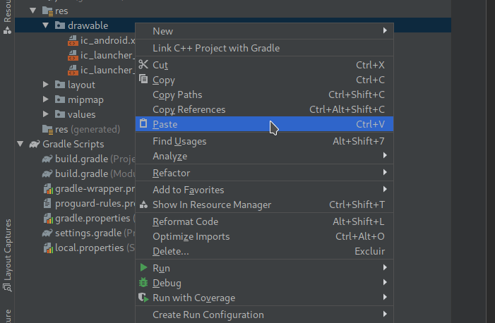

O Kotlin é uma linguagem de programação de código aberto estática, que oferece suporte para programação orientada a objetos e funcional

O Kotlin introduz várias melhorias que causam um impacto significativo na legibilidade do código, aumentando a produtividade e trazendo mais facilidade para manutenção do código gerado.
A Quando o Kotlin foi desenvolvido, ele funcionava exclusivamente na JVM , portanto, oferece um conjunto completo de recursos que tornam a chamada do Kotlin do Java muito fácil.